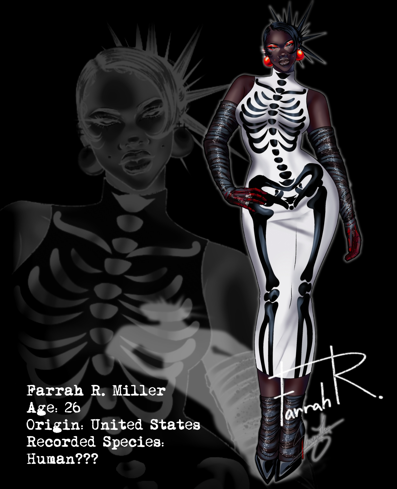
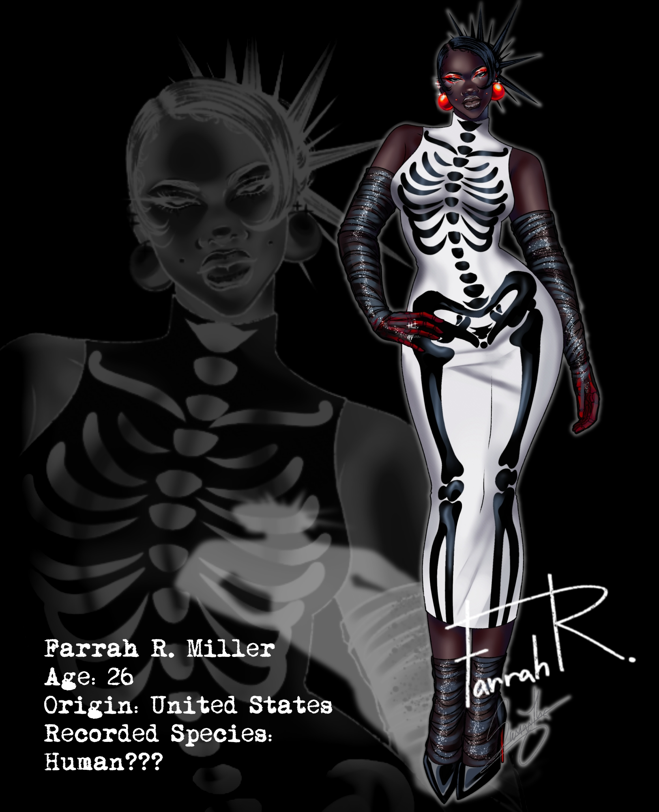
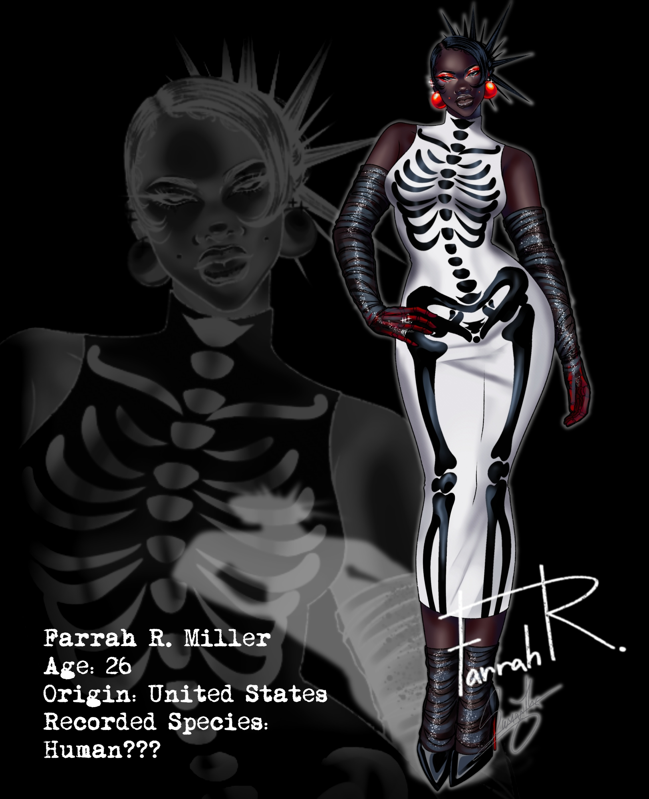

Hidden In Plain Sight
Consists of diffferent subspecies of undead entities. These species camoufalge themselves among the living, some individuals just look like us. We have not found the cause as to why they hide this although there are theories.
Image Carousel with Controls

❮
❯
 
